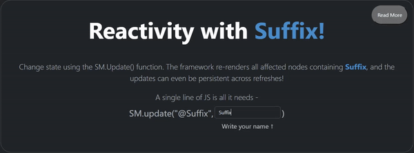
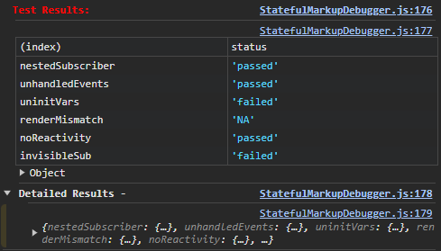

Documentation
Stateful Markup is a framework that is designed to integrate and supercharge existing large
or new vanilla js projects.
To that effect, it tries to do a select few really common things, but do them well.
At a high level, the framework progresses through the following stages:
- Identifying DOM trees that have opted into reactivity/components etc
- Cloning said trees, with the clones being the ones displayed; the originals serve as references
- Waiting for an update to trigger the startup of the Engine and Renderer
- Replacing the cloned tree's variables with the new values
- Saving and reconciling state, such as focused elements and selected text in a textbox
- Displaying the edited DOM tree by replacing the currently displayed DOM tree
If the results of your code are not what you expect, I'd recommend using additional debug client script to help identify any mistakes. It helpfully tests for many common issues.
A high level overview is as follows (Detailed description is provided further below) :
But once the engine has loaded, we know of all the events that have occurred since and can intelligently optimize and skip certain stages.
Three types of DOM trees are required for rendering, and here's why:
The Elements Tree: This reference DOM tree tracks the locations of variables. Without it, after any variable replacement (e.g., '@name' with 'yash'), the framework would lose track of the @name variable in the DOM tree.
The Mirror & Shard: These are two copies of the DOM tree, with the mirror currently under display, and the shard edited with each new update. Keeping two copies facilitates double buffering, ensuring a consistent user view into the app.
Let's grasp the need for double buffering through an example. Imagine a red house displayed on an app. Upon receiving a command to change the wall color to green, the app would slowly paint over the walls, resulting in an inconsistent half-painted state of red and green. Instead, with double buffering, we maintain two sets of DOM trees, painting one while the other is displayed. This leads to a more consistent viewing experience.
Read more about it here.
Subscribers are the main measure with which we can enforce the opt-in nature of the
framework.
Subscribers are HTML tags containing the special
"_sm" class, granting them visibility and reactivity powers. Any subscriber extends these
powers to its children elements.
Note that a subscriber cannot have another subscriber within it, since the ancestor will
take complete control over the rendering.
Any element lacking an ancestor with this special class is invisible to the framework and remains unaffected by state updates, components, or constructs like if/for.
The framework captures all subscribers before the first render, keeping track of them. If you dynamically add/remove the "_sm" class using custom JavaScript, manual notification to the framework is necessary.
<div class="_sm extra-class-one"> <- This entire div, and anything within it is now changeable through the framework
Some text, some <div id="uid-1">...Nested Structure... </div> <- But don't add the _sm tag here, the framework will break due to recursive updates.
</div>
However, remember that premature optimization is often the bane of developer productivity. Stateful markup is highly performant usually, so you very rarely need to do optimizations like the following:
<div class="parent _sm">Some content.<div class="sibling-1">@var1</div><div class="sibling-2">@var2</div></div>
Can be optimized to ->
<div class="parent">Some Content.<div class="sibling-1 _sm" class>@var1</div><div class="sibling-2 _sm">@var2</div></div>
Now the only div with class "parent" does not need to rebuild on change; only its children do.
A transform is comprised of three crucial parts: the element, the mirror, and the shard. These elements form the essence of what converts the original DOM tree into a reactive display.
Elements are the original DOM nodes as authored by the site creator, remaining entirely untouched by the framework. They encapsulate various special variables, components, and constructs in their textual form - such as @var, @@component, @_if, and more.
The framework preserves an unaltered copy of them, cloning them to introduce reactivity. It only modifies and displays these clones.
class="_sm_HideUntilReady" style="opacity: 0;" either on the body
(does not have to be a subscriber) to hide the entire body until ready or on
each subscriber individually.
Mirrors are the DOM trees currently being displayed to the user. When you push an update and the display changes, a new mirror with the respective changes replaces the older DOM tree in the document, explaining why the changes become visible.
Shards represent the future mirrors under construction. Upon each update publication, the
framework clones the original element and injects the changes into the shard. Each shard
goes through multiple stages before it is ready to replace the mirror. These stages, in
order, include External Stateless Update, Value Injection, Construct Injection, Event
Binding, and finally being prepared to replace the current mirror.
After the shards finish construction, the mirrors are replaced by the shards, and then the
shards are nulled.
Value Injection is the method through which the framework truly maintains reactivity. The process involves updating the @vars present in a shard with the current values as published. The _SM_ValueInjector class manages a mapping of each variable and its value, which gets updated with each update/publish call.
@var. So, when a component is registered
and used, the framework publishes a variable with
var = @component-name and value = template of the
component.
Of course, components also have listeners and events associated with them, which go through the normal event system.
Constructs are abstractions that support the usage of functions common in other functions, helping write shorter, less verbose code. There are two basic constructs: If and For. The If construct conditionally renders the DOM elements inside if it evaluates to true. The For construct expands a list shared in the header and displays it as the markup indicates.
Construct Injection is the method through which @_for and @_if constructs come alive.
The framework expands body (surrounded by @{ and }@) according to the type of construct and
the condition of the header.
Finding the markers: Markers are a way to indicate to the framework that a construct is present in the markup. There are three markers -
'@_', '@{', and '}@'. The @_ follows a name which is
the type of construct. Then a pair of brackets follow, containing the header,
like a list or a variable. @{ and }@ contain the body of the construct. This
will typically be some type of markup that gets modified and displayed by the
construct, but can really be anything you wish.
The second stage is executing the construct: The code grabs the construct type and then switches to a function that knows how to handle it. There is complete freedom in how the function works, so build your own if you wish!
Constructs are
best used when there is a particular pattern that you often need to execute in code. The most common ones I felt were useful were conditional rendering and list expansion, which is why I built those.
When a DOM tree is cloned, the resulting clone tree does not keep any event listeners attached to the original tree. So, to retain the event listeners attached to the mirrors, we use the addEventListener function provided by the framework and register the event listeners there. This way, with each update, we re-add the event listeners to each shard.
Now that all the stages are over, we replace the mirrors currently on display with the corresponding shards.
Batched rendering is a method to increase performance and reduce the load on user devices. When an update is performed, the framework waits for a few milliseconds, hoping for other updates to also arrive (common when some updates happen together, such as a sign-out UI change triggering changes in the nav-bar, etc.), and then performs the updates collectively. This optimization saves processing power and can result in a smoother UI. The wait time is generally kept low enough so that users do not notice the delay, typically 16ms (60 fps) or 33ms (30 fps).
To edit this, use the following code and refresh the page:
StatefulMarkupConfig.TARGET_FRAMERATE = 1 //Or your desired value.
Now, each update will take a second to show up. This can be useful to tune according to your users' needs, especially if they have slower/faster devices, ranging from 1 FPS to 120 or more.

Stateful Markup offers the capability to publish updates to local storage, allowing the
preservation of some state even when your website is closed and reopened later.
The persisted updates are reloaded as the first events automatically when the page is
refreshed.
Examples -
SM.publish({ type: 'update_p', var: 'Variable', val: 'Init Value' })
The framework has the ability to intelligently discard the creation of a shard and updating the mirror when an update doesn't cause any noticeable change in the UI. For example, publishing a @variable that exists in only a small set of DOM trees results in only these specific DOM trees getting updated. This approach allows for performant rendering, particularly with larger DOM trees.
Stateful Markup embraces the power of orthogonal design, seamlessly integrating with your current processes and codebase. Meticulously crafted to enhance functionality without imposing changes, our framework ensures effortless coexistence with your existing libraries, tools, and frameworks.
Benefit from high orthogonality as Stateful Markup empowers you to preserve the integrity of your code. Whether you manipulate the DOM tree through external JS or utilize custom event listeners, our framework provides smooth integration with convenient one-line wrappers and the addEventListener function.
To prevent misidentification, variables and constructs bear the '@/@_' prefix, while the _sm class and every function in the StatefulMarkup.js file feature the _SM_ prefix. This thoughtful naming strategy guarantees a non-intrusive coexistence with your current libraries.
In essence, Stateful Markup makes minimal assumptions about your DOM tree or JS code, requiring only nominal changes. Regardless of project complexity, our framework ensures a harmonious integration process, minimizing disruptions to your established development practices.
Key Benefits
- Effortless Integration: Stateful Markup effortlessly integrates into diverse projects, minimizing the need for extensive modifications to your existing codebase. Enjoy a smooth adoption process and accelerated development workflow.
- Code Preservation: Preserve your current coding styles and practices. Whether you've been manually manipulating the DOM tree or implementing custom event listeners, Stateful Markup respects and preserves these functionalities with minimal intervention.
- Enhanced Collaboration: Foster collaboration among developers with varying coding preferences and styles. The framework's non-intrusive integration allows team members to contribute without major disruptions to the existing codebase.
- Minimized Learning Curve: Seamlessly incorporate Stateful Markup without a steep learning curve. The framework's minimal assumptions about the existing DOM tree and JavaScript code ensure a gentle transition, reducing the time needed for adaptation.
- Adaptable to Diverse Projects: Stateful Markup's orthogonality extends its applicability to a wide range of projects. Whether you're working on a small-scale website or a complex web application, the framework's flexibility accommodates different project sizes and requirements.
- Reduced Maintenance Overhead: By preserving the integrity of your codebase, Stateful Markup diminishes potential maintenance overhead associated with extensive modifications. Adopt the framework confidently, knowing that your existing code remains intact and functional.
In summary, the orthogonal design philosophy embedded in Stateful Markup simplifies integration, enhances collaboration, reduces the learning curve, and ensures adaptability across diverse projects, all while preserving the integrity of your existing codebase.
When designing Stateful Markup, a valuable feature that could be neatly implemented was Components. Components are a powerful coupling of various elements, providing an ergonomic experience and extensibility to your website, albeit with a small tradeoff in performance. They allow you to write markup and event listeners for frequently repeated items, such as the footer, nav-bar, dashboard components, etc., only once. This leads to a cleaner and more maintainable codebase. Components also consolidate state, event handling, and markup, providing a single source of truth for such elements. Remember that state is global, so it's important to avoid collisions in your variable names!
const DashboardComponent = { <- Declare a component to register.
name: 'Dashboard', <- Use the string @@Dashboard in any subscribed class to display
template: ` <- Use the string @@Dashboard in any subscribed class to display the following instead
<div id="dash" class="container-fluid h-100 justify-content-start rounded">
<div class="display-6 p-4 text-danger">Super Secret Dashboard</div>
<div class="lead fs-4 py-1">Welcome @Suffix</div>
<button class="btn btn-outline-success text-start fw-semibold fs-6">Launch Penguins into North Korea</button>
</div>
`,
eventListeners: [{ <- Pass an array of event listeners to execute, typically scoped to work only on this component
selector: '#dash .btn', onEvent: 'click', callback: () => {
alert('Penguins launched!')
}
}],
events: [] <- Pass in a set of events, that get executed as soon as the component is registered. Note: They use the publish API, instead of the update API.
}
StatefulMarkupClient.registerComponent(DashboardComponent) <- Registering a component makes it visible to the framework. An unregistered component is unable to get injected.
`
When a DOM tree is cloned, it does not preserve certain states like the focused element, a
checked box or radio button, or the text selected in an input box. These properties have to
be preserved separately. For this, the framework calls a saveState function that reads these
special properties. After the transforms get updated, it reconciles these saved properties
back to the DOM tree.
Currently, the save and reconcile process is still under work. The goal is to build a generic method of saving and reconciling
that does not require any user input. However, at the moment, different types of
reconciliations are implemented on a per-case basis (i.e., different functions
for inputs, checkboxes, radio-groups, etc.).
The code to build such functions is relatively simple; I've created one to preserve focus
for text input elements. I welcome and appreciate any effort to help build plugins for
supporting different input types.
static saveInputState(evt: ReconcilliationEvent) { <- The evt contains the a selector to indicate which DOM element we are saving state of.
let currentState: ReconcilliationEvent = { on: 'input-text', selector: evt.selector }
let selector = evt.selector
let element = document.querySelector(selector) <- Get the to be saved element.
if (element === null)
return _SM_Log.log(2, 'Save state element not found, selector: ' + selector)
<- Now we are going to save the properties we wish to preserve like focus, and text selected
currentState.wasFocused = (document.activeElement === element) + '' <- Checks if this element was focused on.
currentState.selectionStart = element.selectionStart <- Finds the start of text selection, ie. cursor start
currentState.selectionEnd = element.selectionEnd <- Similar to above
this._savedStates.push(currentState) <- Put the saved properties for reconciling later.
}
static reconcileInputState(save: ReconcilliationEvent) { <- save is one of the possibly many saved elements reconciled.
let element = document.querySelector(save.selector) <- Extract the element from the new DOM tree.
if (element === null)
return _SM_Log.log(2, 'Cannot find element to reconcile - ' + save.selector)
if (save.wasFocused === 'true') {
(element as HTMLElement).focus()
}
<- Re-add focus if it was focused before the render happened.
element.setSelectionRange(save.selectionStart, save.selectionEnd)
}
While this works fine, its not very scalable to have to write such reconcilliation events for each type of DOM element you wish to preserve.
To use it, include the script under the StatefulMarkupClient script and use the
The debugger adds tests and logs to cover the following common issues:
The Debug Client adds better & more verbose logs grouped together and also shows which tests were failed, along with remarks explaining why.
